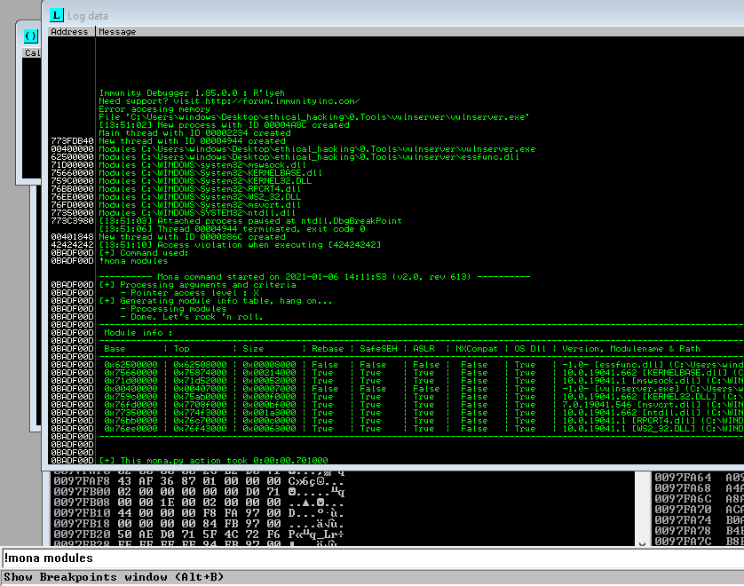

tool out there called mona modules that we can use with immunity debuggger
https://github.com/corelan/mona
saved that file here : C:\Program Files (x86)\Immunity Inc\Immunity Debugger\PyCommands

we are looking for all False in the table and its gotta be attached to vulnserver
protectin settings aent all false for essfunc.dll bt still lets use it
now we ll find opcode equivalent of that
we are basically trying to convert assemny language into hexc code

hence then typed this

see the results tab ka 1st one

made this the script
we wrote the code in regervse
coz its x86 architecture whihc is in literal mdm format which stores lower order bite at lowest address and highest order byte at the highest address
so now it should do same as before bt this tome it should throw a jmp point


press f2 to turn it blue and its made a checkpoint takki when overflow ho then if it hits this instruction then instrad of mobing ahead it will jsut hault here

thus got thsi
thus we control this eip

now generate some shellcode